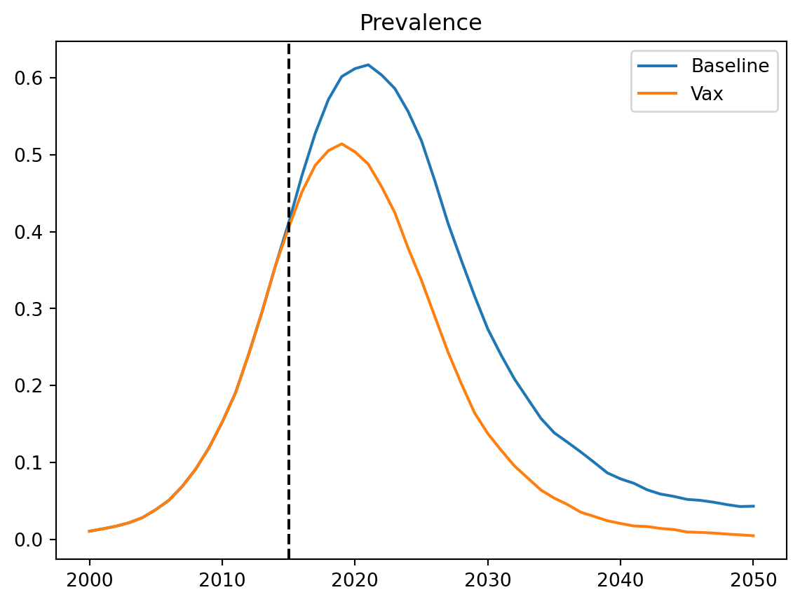
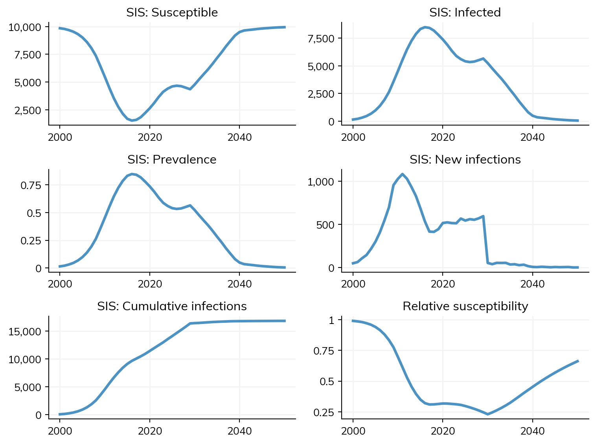

import starsim as ss
ss.options(jupyter=True)
pars = dict(
n_agents = 5_000,
birth_rate = ss.peryear(20),
death_rate = 15,
networks = dict(
type = 'randomnet', # Or 'random'
n_contacts = 4
),
diseases = dict(
type = 'sir',
dur_inf = 10,
beta = 0.1,
)
)T6 - Interventions
Understanding the impact of interventions is one of the most common reasons to use a disease model. This tutorial shows how to implement standard interventions, as well as how to define your own custom interventions.
An interactive version of this notebook is available on Google Colab or Binder.
Products and interventions
Starsim contains products, which can be thought of as the actual test, diagnostic, treatment, or vaccine product being used, as well as interventions, which are responsible for delivering the products to the population.
Depending on what disease you’re modeling, you might need to define your own custom products and interventions, or you might be able to directly use some of the examples provided in Starsim.
Starsim includes three basic “types” of products: diagnostics, treatment, and vaccination. There isn’t a lot of detail in the templates for each of these, because most of the details about products is specific to a disease. There are also some disease-specific products built in the Starsim’s library of diseases - these can generally be found in the diseases subfolder (e.g. the cholera interventions are in cholera.py.
Starsim also includes several basic types of intervention:
routine_vx()for routine vaccination,campaign_vx()for one-off campaigns- similarly,
routine_screening()andcampaign_screening()for different types of screening program treat_num(), which treats a certain number of people each timestep (by default, as many people as need treatment, but you can also set a maximum).
These are sometimes general enough that they don’t need to be tailored to a particular disease, and you can just use them directly. That being said, you are always welcome to tailor them as you like to capture particular features of the intervention you’re modeling.
Vaccination
To create an example, let’s first create the parameters that we want to use for the simulation:
Now we’ll create a vaccine product and a vaccination intervention:
# Create the product - a vaccine with 50% efficacy
my_vaccine = ss.simple_vx(efficacy=0.5)
# Create the intervention
my_intervention = ss.routine_vx(
start_year=2015, # Begin vaccination in 2015
prob=0.2, # 20% coverage
product=my_vaccine # Use the MyVaccine product
)
# Now create two sims: a baseline sim and one with the intervention
sim_base = ss.Sim(pars=pars)
sim_base.run()
sim_intv = ss.Sim(pars=pars, interventions=my_intervention)
sim_intv.run()Initializing sim with 5000 agents
Running 2000.01.01 ( 0/51) (0.00 s) ———————————————————— 2%
Running 2010.01.01 (10/51) (0.17 s) ••••———————————————— 22%
Running 2020.01.01 (20/51) (0.20 s) ••••••••———————————— 41%
Running 2030.01.01 (30/51) (0.22 s) ••••••••••••———————— 61%
Running 2040.01.01 (40/51) (0.25 s) ••••••••••••••••———— 80%
Running 2050.01.01 (50/51) (0.28 s) •••••••••••••••••••• 100%
Initializing sim with 5000 agents
Running 2000.01.01 ( 0/51) (0.00 s) ———————————————————— 2%
Running 2010.01.01 (10/51) (0.03 s) ••••———————————————— 22%
Running 2020.01.01 (20/51) (0.05 s) ••••••••———————————— 41%
Running 2030.01.01 (30/51) (0.08 s) ••••••••••••———————— 61%
Running 2040.01.01 (40/51) (0.11 s) ••••••••••••••••———— 80%
Running 2050.01.01 (50/51) (0.14 s) •••••••••••••••••••• 100%
Sim(n=5000; 2000—2050.0; demographics=births, deaths; networks=randomnet; interventions=routine_vx; diseases=sir)If we want to see the impact, we can create a plot:
import matplotlib.pyplot as plt
res_base = sim_base.results
res_intv = sim_intv.results
plt.figure()
plt.plot(res_base.timevec, res_base.sir.prevalence, label='Baseline')
plt.plot(res_intv.timevec, res_intv.sir.prevalence, label='Vax')
plt.axvline(x=ss.date(2015), color='k', ls='--')
plt.title('Prevalence')
plt.legend()
plt.show()
We can see that from the year of introducing the vaccine, prevalence starts to fall.
Custom interventions
The most common way of accessing diseases for modification by interventions is via their names (e.g. sir, sis). This means that typically, different interventions need to be defined for different diseases. The example below shows how to define a simple vaccine for SIS which is just a function, rather than a class:
import starsim as ss
def simple_sis_vaccine(sim, start=2030, eff=0.9):
if sim.now == start:
sim.diseases.sis.rel_trans[:] *= 1-eff
return
pars = dict(
start=2000,
stop=2050,
diseases='sis',
networks='random',
interventions=simple_sis_vaccine,
)
sim = ss.Sim(pars)
sim.run()
sim.plot()
ss.show()Initializing sim with 10000 agents
Running 2000.01.01 ( 0/51) (0.00 s) ———————————————————— 2%
Running 2010.01.01 (10/51) (0.03 s) ••••———————————————— 22%
Running 2020.01.01 (20/51) (0.06 s) ••••••••———————————— 41%
Running 2030.01.01 (30/51) (0.09 s) ••••••••••••———————— 61%
Running 2040.01.01 (40/51) (0.11 s) ••••••••••••••••———— 80%
Running 2050.01.01 (50/51) (0.14 s) •••••••••••••••••••• 100%
Figure(768x576)
Exercises
- If we change the disease from SIR to SIS and set coverage to 100%, what minimum efficacy of vaccine is required to eradicate the disease by 2050? You will need to implement an
sis_vaccineclass as well (based onss.sir_vaccine– not the simple vaccine above), but can re-usess.routine_vx.